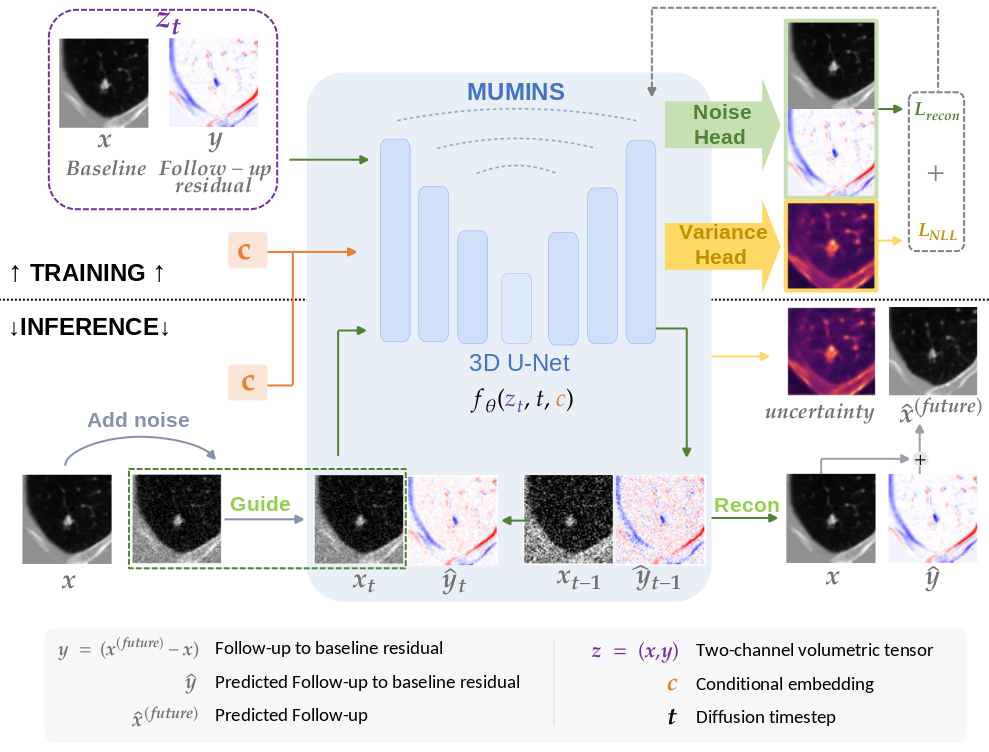
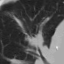
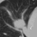
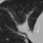
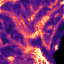
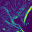
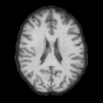
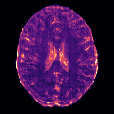
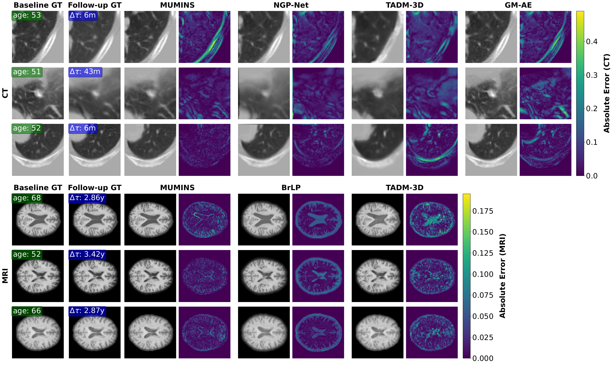
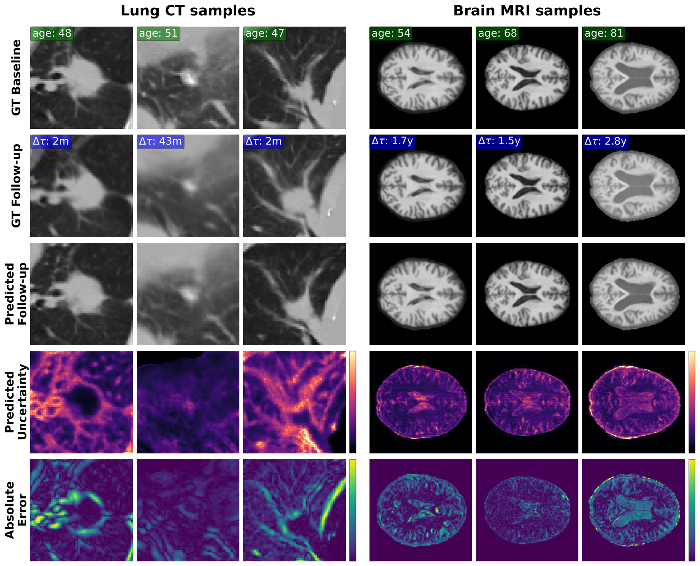

MUMINS: Metadata-conditioned Uncertainty-aware Medical Image Next-state Synthesis
1Eurecat, Centre Tecnològic de Catalunya, Barcelona, Spain
2Dept. de Matemàtiques i Informàtica, Universitat de Barcelona, Spain
3Barcelona Supercomputing Center (BSC), Spain
4Institut de Neurociències, Universitat de Barcelona, Barcelona, Spain
A future scan, and a map of where it is uncertain.
From one baseline scan and a target time interval.
Forecasting change while preserving anatomy
MUMINS models longitudinal change as a residual added to an observed baseline scan. A 3D diffusion model jointly learns the baseline and residual, conditioned on the follow-up interval, age, and acquisition metadata. During synthesis, the observed baseline is re-injected at every denoising step to keep the predicted change tied to the patient's anatomy.

One sampling process, two outputs
A learned variance head estimates uncertainty alongside each noise prediction. These estimates are propagated through the reverse process, producing a spatial uncertainty map together with the synthesized follow-up, without repeatedly sampling the model for Monte Carlo uncertainty.
- Joint baseline–residual diffusion separates relatively stable anatomy from the change to be synthesized.
- Temporal and metadata conditioning controls the follow-up horizon and accounts for age and acquisition-related sharpness changes.
- Baseline reinjection anchors the predicted residual to the observed scan throughout denoising.
- Single-pass uncertainty highlights regions where the synthesized follow-up is less reliable.
Explore the predicted follow-up, slice by slice
Explore every slice in axial, coronal, and sagittal views. The lung CT example includes baseline, observed follow-up, prediction, uncertainty, and absolute error; the brain MRI example shows prediction and predicted uncertainty. Use the slider to choose a slice, or press Play to animate. Zoom is controlled only by the + and − buttons. Both examples use Δb = 0.
Lung CT · PNG
64 slices per plane · Full follow-up comparison





Brain MRI · OASIS-3
128 slices per plane · Prediction and uncertainty


Ground-truth (GT) OASIS-3 scans are omitted from this interactive viewer because the dataset's data-use agreement restricts redistribution. Only MUMINS predictions and predicted uncertainty are shown.
The animation moves through spatial slices at a fixed follow-up interval. Uncertainty σ is predicted standard deviation; absolute error compares the prediction with the true follow-up. Color scales use normalized intensity units and remain fixed across slices within each modality; values outside the displayed limits are clipped.
From pulmonary nodules to brain MRI
The same architecture is trained separately on two longitudinal datasets: PNG for pulmonary nodule progression in chest CT, and OASIS-3 for brain MRI progression. Each dataset has its own trained model; no organ-specific architectural components are introduced.

Quantitative synthesis results
The tables report whole-image means across all test pairs from Table 1 of the preprint, including both MUMINS blur-conditioning settings. Δb describes the change in acquisition blur between the baseline and follow-up scans.
- MUMINS (Δb = 0) preserves the baseline scan's sharpness and requires no information from the unseen follow-up. This is the deployable forecasting setting, used for comparison with methods that also lack access to the true follow-up.
- MUMINS (Δb = GT) uses the blur difference measured from the ground-truth follow-up. It is an oracle diagnostic upper bound: it requires the true follow-up, so it cannot be used to forecast an unseen scan.
Reporting both settings helps separate acquisition-related appearance changes from anatomical progression. The benchmark scans contain real changes in blur between visits: Δb = 0 preserves baseline sharpness, while Δb = GT accounts for that observed drift, improving agreement with the recorded follow-up. See Section 3.3 and Section 4.4 of the preprint.
| Method | MAE (×10⁻²) ↓ | PSNR (dB) ↑ | SSIM (%) ↑ |
|---|---|---|---|
| Copy baseline | 4.54 | 21.91 | 65.21 |
| GM-AE | 4.05 | 22.88 | 65.69 |
| TADM-3D | 4.91 | 21.39 | 66.77 |
| NGP-Net | 4.13 | 22.85 | 71.34 |
| MUMINS (Δb = 0) | 3.95 | 23.53 | 71.40 |
| MUMINS (Δb = GT, oracle) | 3.18 | 25.50 | 78.01 |
| Method | MAE (×10⁻²) ↓ | PSNR (dB) ↑ | SSIM (%) ↑ |
|---|---|---|---|
| Copy baseline | 1.14 | 30.91 | 95.55 |
| BrLP | 1.57 | 27.12 | 94.12 |
| TADM-3D | 1.21 | 30.12 | 94.99 |
| MUMINS (Δb = 0) | 1.13 | 30.87 | 95.34 |
| MUMINS (Δb = GT, oracle) | 1.05 | 31.35 | 95.64 |
Lower MAE and higher PSNR/SSIM are better. Bold values are the best across the listed rows, including the GT oracle setting. On brain MRI, copying the baseline is a strong reference because longitudinal changes are subtle. See Table 1 for standard deviations, subgroup results, and region-of-interest metrics.
Where is the predicted follow-up uncertain?
Compare the observed baseline, actual follow-up, synthesized follow-up, learned uncertainty, and absolute error on held-out examples. Brighter uncertainty regions indicate greater predicted uncertainty; absolute error is computed against the observed follow-up.

The uncertainty map is evaluated against true voxel-wise error, rather than treating Monte Carlo variation as ground truth. Whole-image Spearman correlations are 0.61 for lung CT and 0.54 for brain MRI. Nominal 95% interval coverage is 0.91 and 0.98, respectively. See Table 2 for calibration, region-of-interest results, and the 20-sample Monte Carlo comparison.
Code and reproducibility
The official PyTorch implementation includes dataset preparation guidance, training configurations, and inference scripts for follow-up volumes and uncertainty maps. The repository also documents the OASIS-3 sample selection used in the experiments.
Cite
Accepted to WACV 2027. The citation below refers to the arXiv preprint.
@misc{oliveras2026mumins,
title = {MUMINS: Metadata-conditioned Uncertainty-aware Medical Image Next-state Synthesis},
author = {Anna Oliveras and Roger Marí and Rafael Redondo and Oriol Guardià-Olivella and Cynthia Ifeyinwa Ugwu and Ana Tost and Bhalaji Nagarajan and Carolina Migliorelli and Vicent Ribas and Petia Radeva},
year = {2026},
eprint = {2609.17169},
archivePrefix = {arXiv},
primaryClass = {cs.CV},
url = {https://arxiv.org/abs/2609.17169}
}